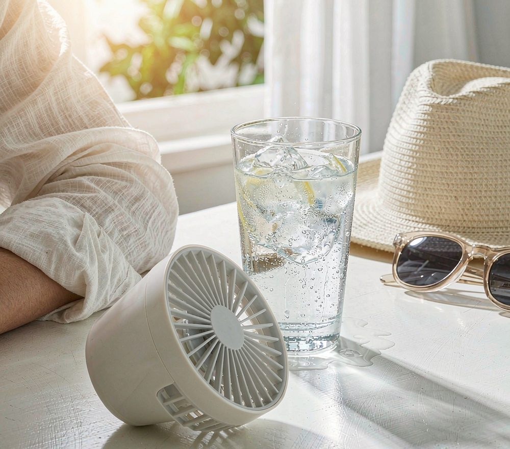

Summer picks: cooling, airflow and heat-proof basics
Hot rooms make everything harder — sleep, focus, temper. This category is about moving air, blocking sun and keeping drinks cold, in that order of impact per pound spent.
Airflow beats refrigeration almost every time: a £25 fan that moves air across a room does more for comfort than a £200 air conditioner that cannot be installed. We rank by effect per pound, and we say plainly where a product is a gimmick.
The discount board
Ranked by how much the price actually moves — not by commission. Every row opens Amazon's live listing.
The percentages are the typical sale-event depth this kind of product reaches, not today's price and not a quote. Amazon reprices constantly, so the button is always the honest number.
When to actually buy
Timing beats loyalty in this category — the same product can move 30% across a year.
Best months to buy
Late April to early June — stock is fresh and prices have not yet reacted to the first heatwave. After the first hot week, fans and air circulators climb and stay up until September.
What to skip
Personal air conditioners and 'cold air' desk units. They cool a square metre at best and use more power than a fan for less airflow.
How to spot a fake discount
Summer gear is frequently listed at a permanent 'was' price. Compare the same model across two other listings before believing any percentage.
Before you order
- Noise is measured in dB at the lowest setting — check reviews for complaints at night speeds.
- For anything with a battery, check whether the cell is replaceable; sealed batteries end the product's life.
- Filter or mesh parts need washing; confirm they are removable before buying.
Questions people ask
Is a fan actually useful in a heatwave?
Yes, for comfort and sleep — moving air helps your body shed heat. It does not lower room temperature, so do not expect a fan to fix a room that is already 35°C.
Do cooling pillows work?
Partially and briefly. They feel cooler for the first hour. A breathable cover and a cooler room do more over a full night.
When do summer products get cheapest?
Clearance in late August and September, when retailers stop stocking seasonal items. The trade-off is limited sizes and colours.
See every category
Daily-life, summer, winter, gifts for her, gifts for him and beauty — all in one place, all ordered by discount depth.
Open Categories →